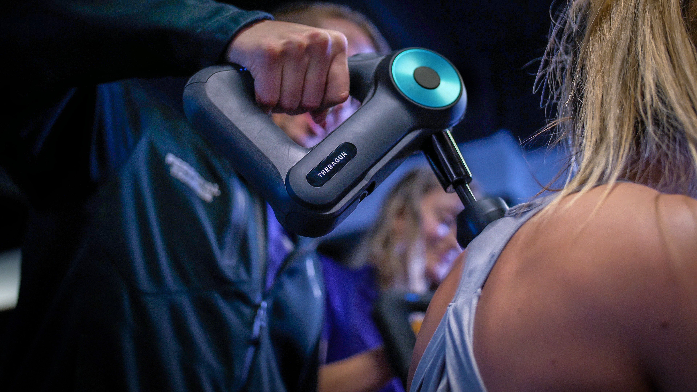
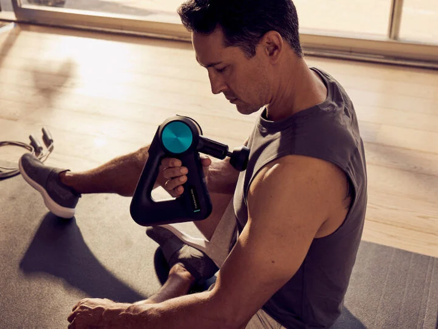

01
Accelerates warm-up
Helps prepare muscles for movement with quick, targeted stimulation.

Percussive therapy for focused muscle relief
Use Theragun before or after training to loosen tight muscles, improve mobility, and support faster recovery.
Recommended use per muscle group:
Up to 2 minutesTheragun sessions help warm up muscles, release tension, and support recovery between workouts.
Helps prepare muscles for movement with quick, targeted stimulation.
Supports better range of motion by easing stiffness before or after activity.
Targets sore spots and helps reduce everyday muscle discomfort.
Helps the body relax by reducing tension in tight muscle areas.
Complements training routines by supporting consistent muscle recovery.

Press and hold the power button for two seconds. Set the speed before placing the device on your body.
Move the attachment slowly across large muscle groups such as your quads, glutes, or calves. Use it for 15-30 seconds for a quick warm-up, or up to 2 minutes on sore areas.
When you find a knot or tight area, hold the device steady over that spot for 15-30 seconds. Avoid pressing too hard.
Do not use the device directly on bones, joints, or the front and sides of your neck.